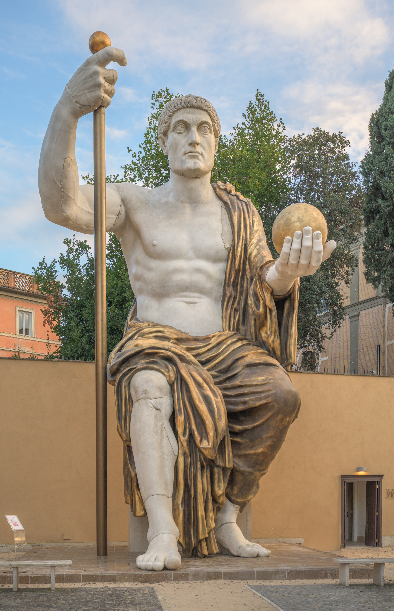
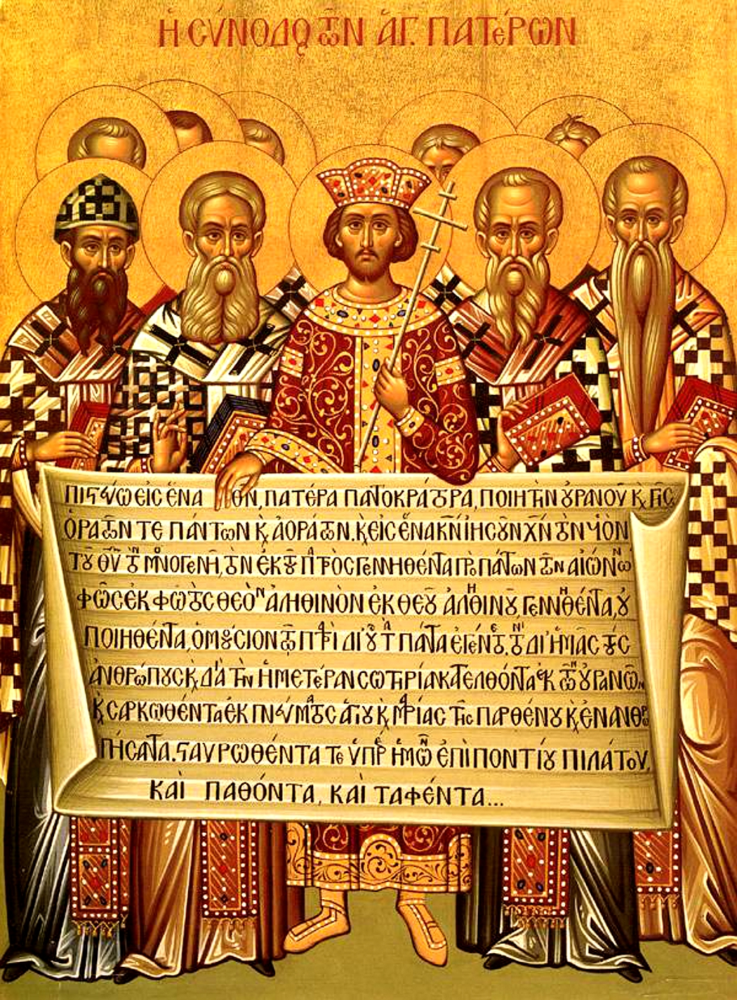
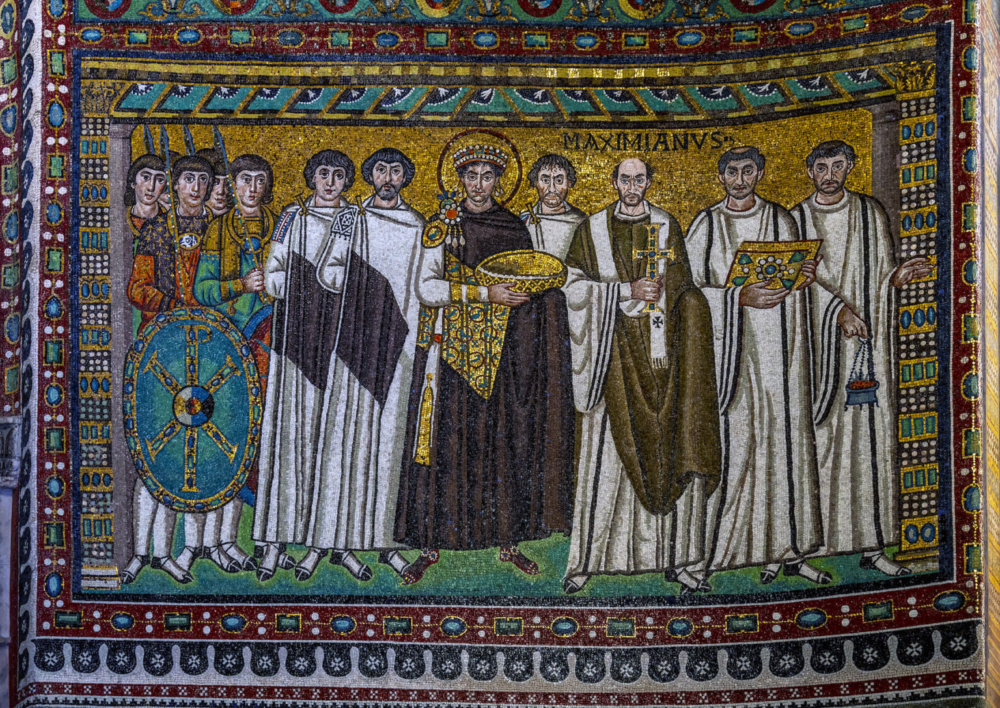

1. Εισαγωγή: Το Κολοσσιαίο Πολιτικό & Πνευματικό Παράδοξο
Στο όγδοο μάθημα της σειράς, η Μαρία Ευθυμίου εξετάζει την πιο ριζοσπαστική μεταστροφή στην ευρωπαϊκή ιστορία: πώς μια παράνομη αίρεση των ταπεινών και των δούλων, που ξεκίνησε στις σκοτεινές κατακόμβες της Ρώμης, κατάφερε μέσα σε τρεις αιώνες να φορέσει την πορφύρα των Ρωμαίων Καισάρων!
Δεν πρόκειται απλώς για μια αλλαγή τελετουργιών, αλλά για τη θεμελίωση ενός εντελώς νέου πολιτισμικού μοντέλου: τη γέννηση της **Χριστιανικής Ρωμαϊκής Οικουμένης**.
2. Οι Ρωμαϊκοί Διωγμοί: Γιατί οι Ρωμαίοι Φοβήθηκαν τους Χριστιανούς;
Η Ρωμαϊκή Αυτοκρατορία ήταν παροιμιωδώς ανεκτική σε ξένες θρησκείες: λάτρευε την Ίσιδα από την Αίγυπτο, τον Μίθρα από την Περσία, τον Δία από την Ελλάδα. Γιατί λοιπόν κυνήγησε τους Χριστιανούς με τέτοια μανία;
Η εξήγηση είναι πολιτειακή: Η λατρεία του Αυτοκράτορα δεν ήταν απλώς θρησκευτική πράξη, αλλά ο όρκος πίστης στο ρωμαϊκό κράτος. Όποιος αρνούνταν να ρίξει μια πρέζα θυμίαμα στο άγαλμα του Καίσαρα δεν θεωρούνταν απλώς αιρετικός, αλλά δημόσιος εχθρός και προδότης. Οι Χριστιανοί, αρνούμενοι να θεοποιήσουν το κράτος, αντιμετωπίστηκαν ως αναρχικοί υπονομευτές.
Όπως παρατηρεί η Μαρία Ευθυμίου, οι πρώιμες χριστιανικές ομάδες ζούσαν επιπλέον με έναν τρόπο ριζοσπαστικό και σχεδόν αντιεξουσιαστικό: μοιράζονταν κοινοβιακά τα υπάρχοντά τους, κατήργησαν τις κοινωνικές και ταξικές διακρίσεις δούλων και ελευθέρων, και αναγνώριζαν ως μόνη υπέρτατη εξουσία τον Θεό και όχι τους γήινους άρχοντες.
3. Ο Μέγας Κωνσταντίνος: Η Μιλβία Γέφυρα & το Διάταγμα των Μεδιολάνων
Τον Οκτώβριο του 312 μ.Χ., στα πρόθυρα της αποφασιστικής **Μάχης της Μιλβίας Γέφυρας** ενάντια στον Μαξέντιο, ο Κωνσταντίνος είδε στον ουρανό το σημείο του Σταυρού με την επιγραφή «Εν τούτω νίκα» (*In hoc signo vinces*). Χαράσσοντας το χριστόγραμμα στις ασπίδες του, συνέτριψε τον αντίπαλό του και κατέστη κυρίαρχος της Δύσης.

Το 313 μ.Χ., μαζί με τον Λικίνιο, εξέδωσε το Διάταγμα των Μεδιολάνων (Μιλάνου): καθιέρωσε πλήρη ανεξιθρησκία, επέστρεψε τις δημευμένες περιουσίες στους Χριστιανούς και αναγνώρισε την Εκκλησία ως νόμιμο νομικό πρόσωπο. Ο Κωνσταντίνος ήταν ένας ρεαλιστής πολιτικός ογκόλιθος: κατάλαβε ότι ο παλιός παγανιστικός κόσμος είχε πεθάνει, και ότι η μόνη οργανωμένη δύναμη που μπορούσε να δώσει νέο αίμα στην Αυτοκρατορία ήταν οι χριστιανικές κοινότητες.
4. Η Α΄ Οικουμενική Σύνοδος της Νίκαιας (325 μ.Χ.) και το «Ομοούσιον»
Όταν ο Χριστιανισμός βγήκε στο φως, κινδύνευσε άμεσα να διαλυθεί από εσωτερικές θεολογικές διαμάχες. Ο Αλεξανδρινός πρεσβύτερος Άρειος υποστήριζε ότι ο Χριστός ήταν ένα απλό κτίσμα του Θεού Πατέρα, προκαλώντας τεράστιο σάλο σε ολόκληρη την Ανατολή.
Ο Κωνσταντίνος, βλέποντας την ενότητα του κράτους να απειλείται, συγκάλεσε το 325 μ.Χ. στη Νίκαια της Βιθυνίας την Α΄ Οικουμενική Σύνοδο, εγκαινιάζοντας τον θεσμό των Συνόδων ως ανώτατης εκκλησιαστικής αυθεντίας.

Στη Νίκαια καθιερώθηκε η θεμελιώδης λέξη-κλειδί: «Ομοούσιος τῷ Πατρί». Ο Χριστός είναι πλήρης και τέλειος Θεός, της ίδιας ουσίας με τον Πατέρα. Συντάχθηκε το πρώτο μέρος του Συμβόλου της Πίστεως (Πιστεύω).
5. Ο Ιουλιανός ο Παραβάτης & ο Μέγας Θεοδόσιος (380 μ.Χ.)
Η επικράτηση του Χριστιανισμού δεν ήταν ανέφελη. Το 361 μ.Χ., ο ανιψιός του Κωνσταντίνου, ο αυτοκράτορας Ιουλιανός ο Παραβάτης, γαλουχημένος με την κλασική ελληνική φιλοσοφία στην Αθήνα, επιχείρησε να αναβιώσει την παλιά θρησκεία. Άνοιξε τους παγανιστικούς ναούς, αφαίρεσε τα προνόμια των χριστιανών και προσπάθησε να ιδρύσει ένα εθνικό ιερατείο με φιλανθρωπικό έργο.
Το 362 μ.Χ., ο Ιουλιανός έστειλε τον γιατρό του Ορειβάσιο στους Δελφούς για να ρωτήσει την Πυθία αν μπορεί να αναγεννηθεί το αρχαίο πνεύμα. Η απάντηση υπήρξε ο σπαρακτικός τελευταίος χρησμός των Δελφών: «Εἴπατε τῷ βασιλῆϊ, χαμαὶ πέσε δαίδαλος αὐλά, οὐκέτι Φοῖβος ἔχει καλύβην, οὐ μάντιδα δάφνην, οὐ παγὰν λαλέουσαν, ἀπέσβετο καὶ λάλον ὕδωρ» (Πείτε στον βασιλιά, έπεσε στη γη η περίτεχνη αυλή, δεν έχει πια ο Φοίβος κατοικιά, ούτε δάφνη μαντική, ούτε πηγή που να μιλά, έσβησε και το λαλούν νερό). Ο Ιουλιανός σκοτώθηκε το 363 μ.Χ. στην Περσία, αφήνοντας τη θρυλική κραυγή: «Νενίκηκάς με, Ναζωραίε!».
Το 380 μ.Χ., ο Αυτοκράτορας Θεοδόσιος Α΄ με το περίφημο Διάταγμα της Θεσσαλονίκης (*Cunctos populos*) κήρυξε τον χριστιανισμό ως τη μόνη νόμιμη και επίσημη θρησκεία της Ρωμαϊκής Αυτοκρατορίας. Οι παλιές παγανιστικές λατρείες απαγορεύτηκαν, τα αρχαία ιερά σφραγίστηκαν και το 393 μ.Χ. καταργήθηκαν οι Ολυμπιακοί Αγώνες. Ο Χριστιανισμός είχε γίνει πλέον ο απόλυτος εξουσιαστικός μηχανισμός του κράτους.

6. Οι Χριστολογικές Έριδες, η Θεοδώρα & ο Ιουστινιανός
Τον 5ο αιώνα, οι θεολογικές διαμάχες επικεντρώθηκαν στη σχέση της ανθρώπινης και της θεϊκής φύσης του Χριστού:
- Γ΄ Οικουμενική Σύνοδος (Έφεσος, 431 μ.Χ.): Καταδίκασε τον Νεστόριο και ανακήρυξε επίσημα την Παναγία ως Θεοτόκο (όχι απλώς Χριστοτόκο).
- Δ΄ Οικουμενική Σύνοδος (Χαλκηδόνα, 451 μ.Χ.): Καταδίκασε τον Μονοφυσιτισμό και διατύπωσε το απαράμιλλο δόγμα: Ο Χριστός είναι ένας, αλλά έχει δύο τέλειες φύσεις (θεϊκή και ανθρώπινη), ενωμένες «ἀσυγχύτως, ἀτρέπτως, ἀδιαιρέτως, ἀχωρίστως». Οι πληθυσμοί της Αιγύπτου (Κόπτες) και της Συρίας αποξενώθηκαν από την Κωνσταντινούπολη, διευκολύνοντας αργότερα την αραβική κατάκτηση.
- Η Στάση του Νίκα & η Ατσαλένια Θεοδώρα (532 μ.Χ.): Όταν η Κωνσταντινούπολη καιγόταν και ο Ιουστινιανός ετοιμαζόταν να φύγει με τα καράβια, η Αυτοκράτειρα Θεοδώρα στάθηκε αγέρωχη λέγοντας τα ιστορικά λόγια: «Καλόν εντάφιον η αλουργίς» (ωραίο σάβανο είναι η βασιλική πορφύρα!). Ο Ιουστινιανός έμεινε, κατέστειλε τη στάση και έχτισε πάνω στα ερείπια την Αγία Σοφία (537 μ.Χ.), αναφωνώντας στα εγκαίνια: «Νενίκηκά σε, Σολομών!».
Η Απόκλιση Ανατολής και Δύσης (Συνοδικότητα έναντι Παπισμού): Η καθηγήτρια φωτίζει τη βαθιά δομική διαφορά που κατέληξε στο Σχίσμα του 1054: Στην Ανατολή (Ορθοδοξία), το αλάθητο ανήκει αποκλειστικά στο συλλογικό σώμα των Οικουμενικών Συνόδων, όπου το Άγιο Πνεύμα καθοδηγεί τους επισκόπους όλους μαζί. Στη Δύση (Καθολικισμός), η απόλυτη μοναρχική αυθεντία συγκεντρώθηκε στον Πάπα Ρώμης ως μοναδικό διάδοχο του Αποστόλου Πέτρου.
Το Άαχεν του Καρλομάγνου έναντι της Κωνσταντινούπολης και του Τσανγκ-άν: Γύρω στο 800 μ.Χ., όταν ο Καρλομάγνος στέφθηκε αυτοκράτορας στη Ρώμη, η πρωτεύουσά του, το Άαχεν (Aachen), δεν ήταν παρά μια μικρή επαρχιακή κωμόπολη με ένα παλάτι και μια βασιλική. Την ίδια εποχή, η Κωνσταντινούπολη ήταν η πανίσχυρη βασιλίδα των πόλεων, ενώ στην Κίνα της δυναστείας Τανγκ η πρωτεύουσα Τσανγκ-άν διέθετε κεντρικές λεωφόρους πλάτους 153 μέτρων!
Ο Εκχριστιανισμός των Σλάβων: Με την αποστολή των Θεσσαλονικέων Κυρίλλου και Μεθοδίου (9ος αι.) και τη βάπτιση του πρίγκιπα Βλαδίμηρου στο Κίεβο (988 μ.Χ.), η Ορθοδοξία επεκτάθηκε στις αχανείς εκτάσεις της Ανατολικής Ευρώπης και της Ευρασίας, μετατρέποντας τον σλαβικό κόσμο σε οργανικό πυλώνα του ανατολικού χριστιανικού πολιτισμού.
7. Ετυμολογικό Εργαστήρι: Οι Λέξεις του Δόγματος
- Ομοούσιος: Από το ὁμός (ίδιος) + οὐσία (ύπαρξη, είναι). Ο όρος που συνέθεσε η ελληνική φιλοσοφία για να περιγράψει την απόλυτη ισότητα Πατρός και Υιού.
- Αίρεση: Από το ρήμα αἱρέω-ῶ (επιλέγω). Στην αρχαιότητα σήμαινε τη φιλοσοφική επιλογή (π.χ. στωική αίρεση). Στην Εκκλησία σήμαινε την αποκοπή από το όλον.
- Δόγμα: Από το δοκέω-ῶ (κρίνω σωστό). Στην κλασική Αθήνα ήταν το ψήφισμα του δήμου· στη θεολογία έγινε η απαρασάλευτη αλήθεια της πίστης.
- Σύνοδος: Από το σύν (μαζί) + ὁδός (δρόμος). Κυριολεκτικά σημαίνει «το να βαδίζουμε στον ίδιο δρόμο μαζί».